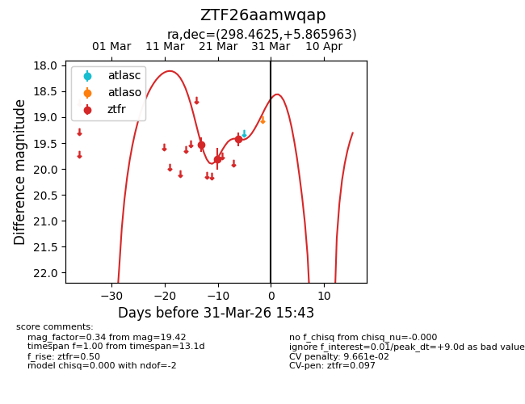
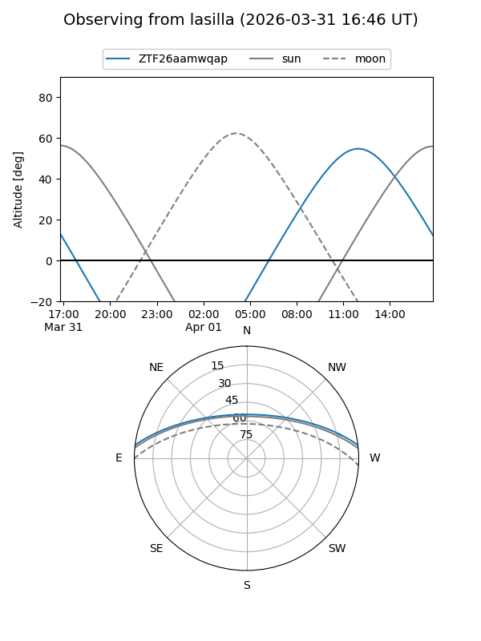
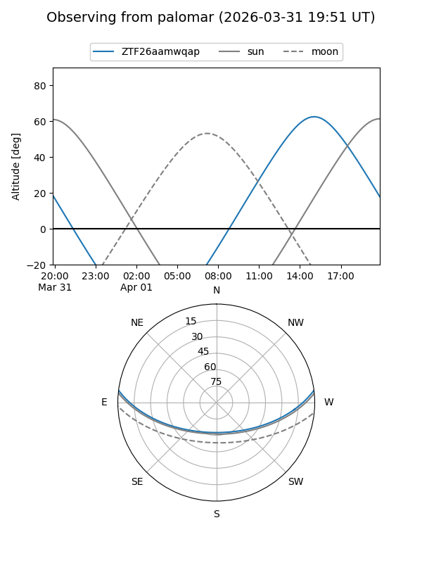
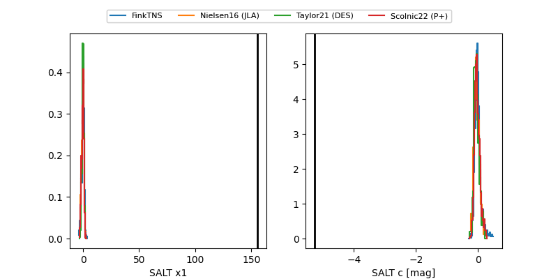

ZTF26aamwqap
Target ZTF26aamwqap at 2026-03-31 15:45
Aliases and brokers:
FINK: link
Lasair: link
ALeRCE: link
alt names
ZTF26aamwqap (ztf,fink_ztf)
Coordinates:
equatorial (ra, dec) = 298.4625,+5.86596
equatorial (HMS+DMS) = 19:53:50.99,+05:51:57.47
galactic (l, b) = (45.4636,-11.04176)
Flags:
likely cv
Photometry:
last ztfr=19.42
3 ztfr detections
Lightcurve

Visibility


Additional plots
